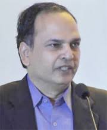
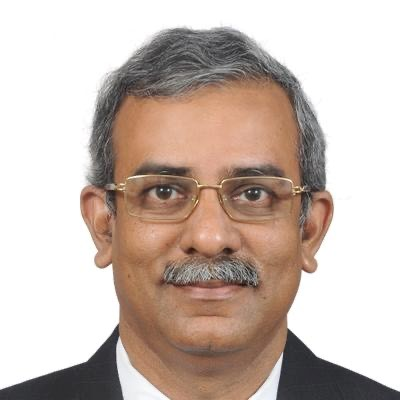
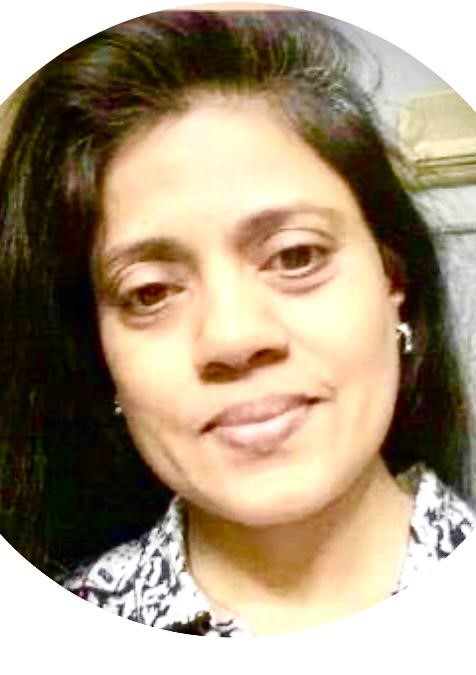
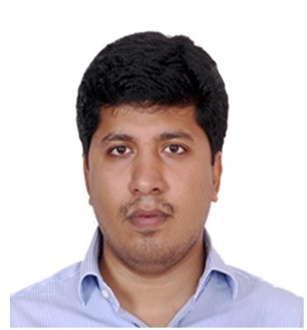
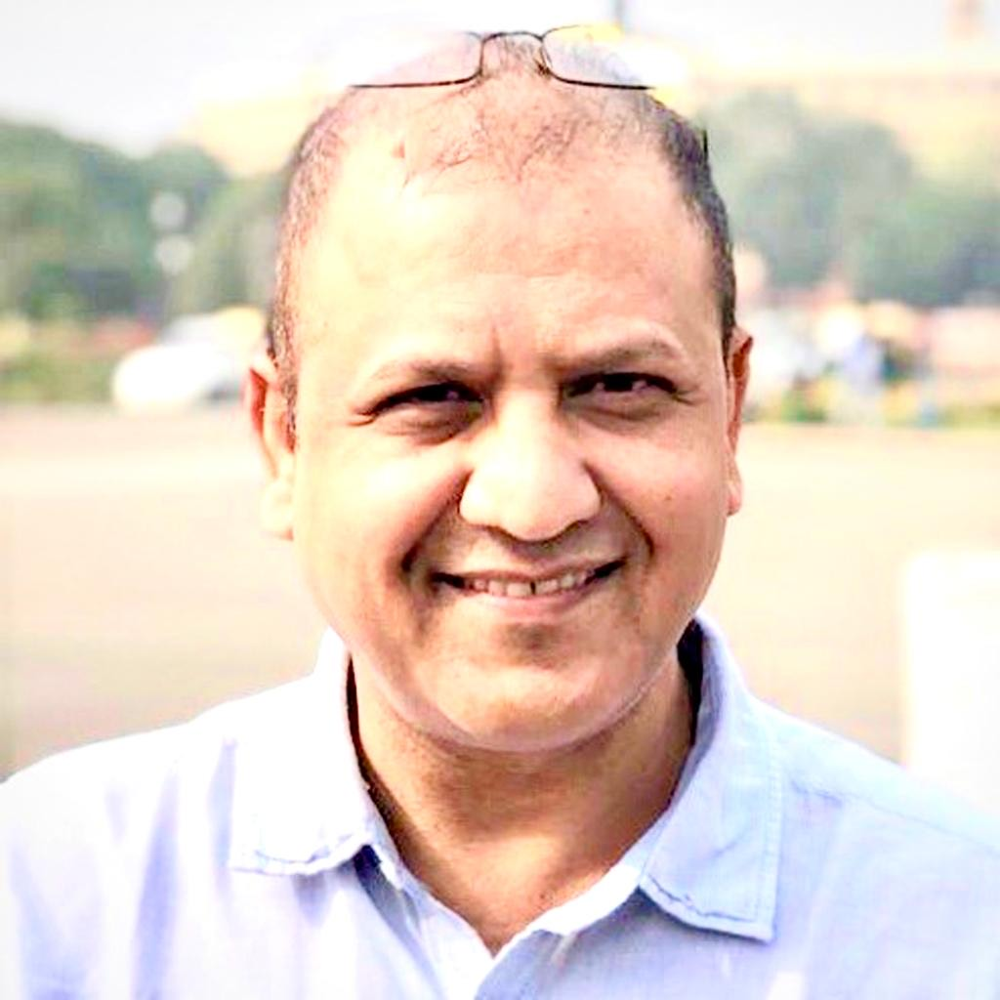

Our Team
More About Us
We are a team of subject matter experts across the different domains and verticals.
The team includes professionals with extensive domain experience and the ability to
orchestrate successful, innovative and robust solutions. The management team has
thought leaders and experts with extensive and varied experience. We have the
ambience and the ability to attract talent.
Our capabilities and intellectual capital is enhanced by our deep industry expertise,
in-depth domain knowledge, innovative approach, analytical rigor, and hands-on,
collaborative relationship and motivated teams. We see what others don't, question
conventions, and consistently deliver robust, customized and innovative solutions.
We enable our clients in enhancing value in several areas including livelihood,
education, skill development, health etc.
Dr. Joshi

Dr. Joshi IAS (Retd.) former Chief Secretary, Government of Telangana, is a
multi-disciplinary professional having vast experience in conceptualization,
development, implementation and monitoring of various developmental programs
and projects in India.
He has contributed to Global Environmental Issues from the United Nations
Conference on Environment and Development and to the United Nations
Conference on sustainable development at Johannesburg.
He is a great votary of citizen centric administration, involving common citizens
as partners in governance.
He is an alumnus of the IIT and earned his Ph.D in the area of economic theory
of federalism and environmental economics. He is a LEAD Fellow of the TERI
University.
Sundaram Ramaswamy

Initiated into the journey of Service Excellence, Sundaram Ramaswamy, has worked
in Consumer service industry, namely, Hospitality, Banking, Financial Services,
Insurance, Logistics, Telecom designing and strategising Service Delivery channels
and self-service tools.
A firm believer in Automation and passionate about nurturing inclusiveness as a
means to achieve service excellence. Wearing a consultant hat, has helped large
corporates to align and optimise technology deployment with Human Capital
Preservation leading to enhanced utilisation of intuitive intelligence to achieve
Consumer Experience and profitability goals.
In the recent past Ramaswamy has been part of a few start-up business in the ITES,
Financial Inclusion and Service Enablement domains.
Specialties: Design and development of service channels, Strategy building for
Customer Life Cycle Value creation, Self Service design, Adoption of digital service
channels as an alternative to achieve inclusion and simplicity of process
management.
Hema Jain

Hema is a social entrepreneur, industry leader and a mentor.
She consults with and serves some of the largest and most reputed
organizations worldwide including UNDP, UNICEF, ILO, GIZ several
government departments and multinationals like Google, TCS, Accenture,
Tata and the Birla groups etc.
She is been associated with several initiatives including a part of the
United Nations task force for entrepreneurship development, and is a
member of several Government think tanks.
Her area of interest includes knowledge management, change
management and rural development.
She is highly passionate about entrepreneurship development and
sustainable business of SME and participates in mentoring and coaching
at various platforms.
Hema was the youngest president of HMA and during her tenure HMA for
the first time won the best management association award in India.
She is a qualified independent director and an arbitrator.
Nitin Koppolu

Nitin comes with over 15 years’ experience across diverse fields like Talent
acquisition, Resource Management, Business Operations and Finance.
At Jawahar Knowledge center (JKC) he played a crucial role in Talent
Management and Organization Development. Later, he joined Rajiv
Gandhi University of knowledge Technologies (RGUKT) at its inception
stage and was responsible for set up and implementation of processes
across various departments like Planning & Infrastructure, Procurement,
Recruitment, Admissions etc. He played a pivotal role in coordinating with
various govt. departments for seamless execution of tasks.
He has extensive hands on experience in Public Relations Management,
HRM, Training and Information Systems Development.
Nitin is an engineering graduate in Computer Sciences from Jawaharlal
Nehru Technological University.
He was a research scholar at Carnegie Mellon University.
Dr. Vikas Singh

Dr. Vikas Singh is a social entrepreneur.
Over the last few years Dr. Singh has worked relentlessly across several
macro initiatives including financial inclusion, digital literacy, Jan Dhan
Yojana, entrepreneurship (with UNDP), and social health initiatives such
as Polio Program (with UNICEF).
He consults for large businesses and governments on governance and
strategy. His engagements are focused on providing insights that help
leaders face the challenges of growth, governance, and leadership.
Known for his advocacy of inclusive growth and development, his work in
the area of financial inclusion, and sustainable development has created
sustainable livelihood opportunities and impacted over millions of Indians.
He is largely credited with taking the idea of Unconditional basic Income
concept in the public domain, and making it a narrative of the masses. He
recently spoke on the TED platform.
He is a well-respected and widely read columnist and is widely translated
in other languages as well.
Vikas is a visiting faculty at leadership development institutions (for
business leaders as well as for the All India Services officers).